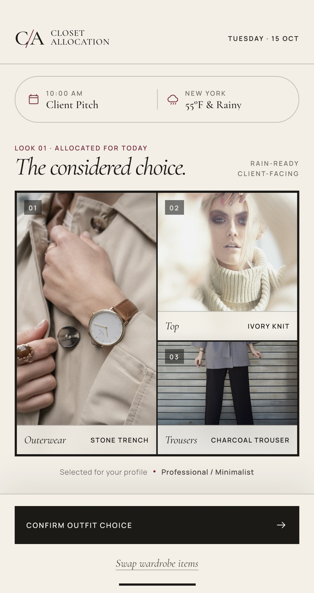
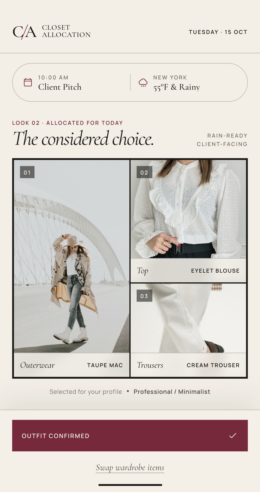
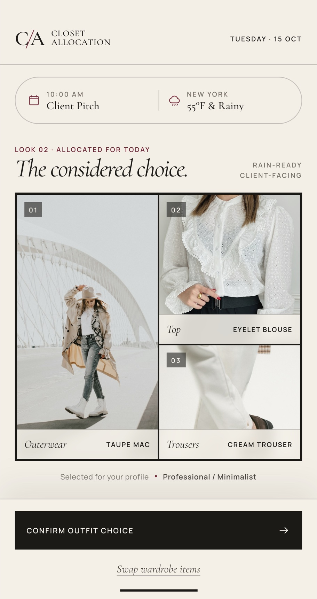
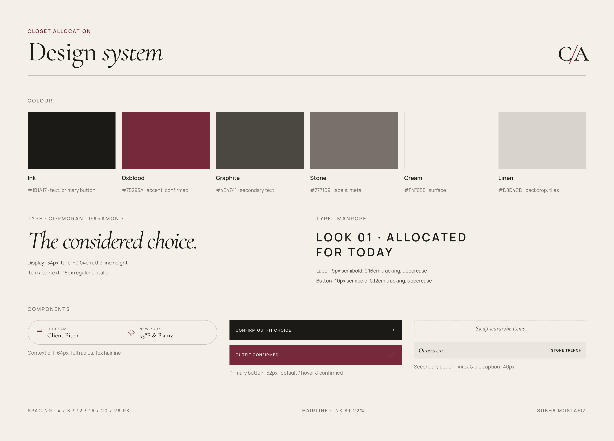

04 · Case study
Closet Allocation
One considered outfit each morning, chosen from your own wardrobe around the day's weather and calendar.
- Designer
- Subha Mostafiz
- Type
- Student concept project
- Timeline
- 2–4 weeks
- Tools
- Figma, Figma Make, Claude, React, Tailwind
Interactive prototype
Confirm it, or swap it.
Two complete looks with working Swap and Confirm states. It opens in a new tab.
Open the prototype ↗

01
The problem
Getting dressed costs 10–15 minutes of attention, every day.
As life gets busier, choosing clothes becomes one more decision stacked onto the start of the day. It is a problem for everyone: standing in front of a full wardrobe, checking the weather, remembering what the day holds, and trying to put together something that works. The effort is small but it repeats every morning.
02
The goal
Turn an open-ended choice into a single yes or no.
Instead of browsing a wardrobe, the user is handed one complete outfit that already accounts for the day. They either confirm it or swap it. The app does the deciding; the person keeps the final say.
03
Principles
- One screen, one decision. The whole experience fits on a single view with two actions: Confirm or Swap.
- Show the reason before the result. The first event of the day and the weather sit above the outfit, so the suggestion reads as reasoned rather than random.
- Feel like a stylist, not a utility. An editorial look, closer to a fashion magazine than a productivity app, makes a daily routine feel considered.
04
The screen
Context, outfit, action. Read top to bottom.
The layout follows the order of a morning decision: what's happening today, what to wear, and whether to accept it.
A · Day context
A pill pairs the first calendar event (10:00 AM, Client Pitch) with local weather (New York, 55°F and rainy). These two inputs drive the recommendation.
B · Look header
A numbered look and tags that translate context into dress requirements: rain-ready, client-facing.
C · Outfit card
Three pieces in a framed grid: outerwear at full height as the anchor, top and trousers stacked beside it. Each tile carries its category and item name.
D · Style profile
A quiet line confirming which profile the look was selected for.
E · Actions
A sticky bar keeps the primary Confirm button in thumb reach. Swap is a secondary text action, so accepting is always the easier path.
05
Interaction
Swap until it feels right, then confirm.
Swap replaces all three pieces with the next look and resets the confirmation. Confirm turns the button oxblood with a check, a clear signal that the decision is done for the day.

06
Visual system
A small, strict palette and two typefaces.
Warm neutrals let the clothing photography carry the colour. Oxblood is reserved for meaning: context icons, look labels and the confirmed state.

07
Process
- Explore in Figma and Figma Make Early screens and a React + Tailwind prototype tested the core idea: a single daily outfit card with Confirm and Swap.
- Consolidate into one design Separate design files were merged into a single screen with one palette (cream, ink, oxblood), one type pairing, and consistent spacing and component sizes.
- Make the photography honest The first photos didn't match their garment labels. Images were re-sourced, items renamed where needed, and every photo re-cropped to fill its tile, so each label describes exactly what's shown.
- Build a working prototype Using Claude, the design was built as a clickable prototype with two complete looks, working Swap and Confirm states, and clean image loading.
08
Next steps
The concept covers the core daily moment. To grow it into a full product, the next areas to design are:
- Onboarding: photographing a wardrobe and setting a style profile.
- Wardrobe management: adding, tagging and retiring pieces.
- Item detail: why a piece was chosen and what else it pairs with.
- Learning from swaps, so recommendations improve over time.
- User testing to measure how much morning decision time it actually saves.
Outfit photos in the screens and prototype are from Unsplash.